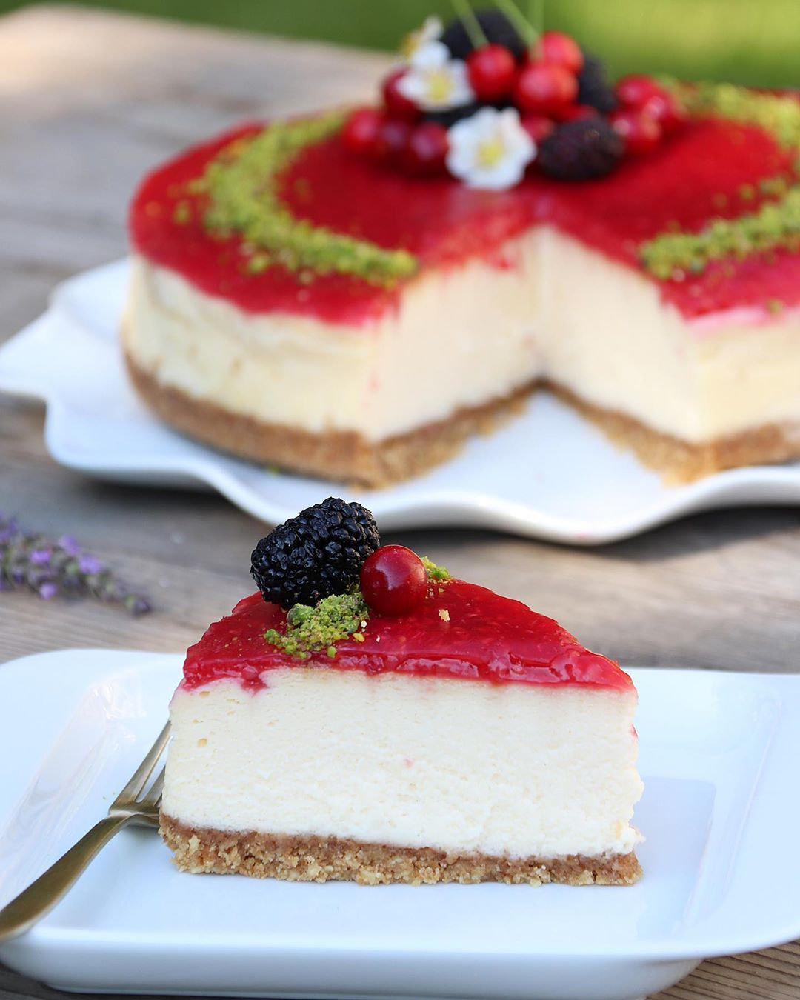

Frambuazlı Cheesecake Nasıl Yapılır?
Tarif:Elif Atalar
Alt tabanı için, bisküvileri ve fındığı rondoda un gibi yapana kadar çekiyoruz.
Eritmiş olduğumuz tereyağını ve sütü yavaş yavaş ilave edip alt tabanı hazır hale getiriyoruz.
Sosu için; frambuaza şekeri ve suyu ilave edip dolapta bir saat bekletiyoruz ve ocağa alıp bir çay bardağı soğuk suyla mısır nişastasını eritip içine ilave edip kaynatmaya başlıyoruz.
Kaynayınca kısık ateşte 5 dakika daha kaynatıp ocaktan alıp vanilyasını ilave edip ılıyana kadar kabuk tutmaması için hafif karıştırıyoruz ve soğumaya bırakıyoruz.
Öncelikle alt taban için kelepçeli kalıbımızı iyice yağlayıp hazırlanmış olduğumuz harcı içine bastırarak düzgün ve eşit bir şekilde yerleştirip dolaba koyuyoruz.
Labne peyniri ayrı bir kapta 3 dakika kadar çırpıyoruz.
Kremayı da aynı şekilde ayrı bir kapta hafif katılaşana kadar çırpıp 2 sinide aynı kabın içine alıp içine şekeri ilave edip çırpmaya devam ediyoruz.
Yumurtaları da tek tek ilave edip yaklaşık 5 dakika çırpmaya devam ediyoruz.
En son unu ve vanilyasını ilave edip dolaptaki harcı çıkarıp üzerine döküyoruz. Bu arada dökmeden önce kalıbın kenarını folyo ile sarıyoruz. Böylelikle uzun süre fırında kaldığı için kenarları yanmamış oluyor.
Ve kalıba hafifçe vurup içindeki hava kabarcıklarının dışarı çıkmasını sağlayıp önceden ısıtılmış fırında ilk 10 dakika 200 derecede, 10 dakika sonra 160 derecelik fırında pişiriyoruz.
Fırının kapağını 1 saatten önce asla açmıyoruz.
Ayrıca fırının içine mutlaka ısıya dayanıklı su dolu orta büyüklükte bir kap koyuyoruz. Böylelikle çatlamasını önlüyoruz.
Ve 1 saat sonra kapağı açtığımızda Cheesecakemiz hafif salladığımızda oynamıyorsa fırını kapatıp kapağını biraz aralayıp ılınmaya bırakıyoruz.
Ilındıktan sonra fırından çıkarıp 1 saat kadar soğuduktan sonra hazırladığımız sosu üzerine döküp frambuaz parçalarıyla süslüyoruz ve dolapta 1 gece dinlendirip servis yapıyoruz. Afiyet olsun.
